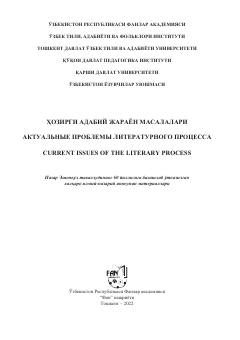

HANazar Eshonqul tavalludining 60 yilligiga bag'ishlangan xalqaro ilmiy-nazariy anjuman materiallari to'plami.
Mazkur to'plam Nazar Eshonqul tavalludining 60 yilligiga bag'ishlab o'tkazilgan xalqaro ilmiy-nazariy anjuman materiallarini o'z ichiga oladi. Unda filologiya fanining turli sohalariga oid ilmiy kuzatishlar va adabiy jarayon masalalari muhokama qilingan. Kitob ilmiy tadqiqotchilar, mutaxassislar va keng kitobxonlar ommasiga mo'ljallangan.